Add Auxiliary USB Power to a KLR 650
 Danny Wahl
•
Danny Wahl
•
I'd like to start by saying that my long term dream is to rewire my entire bike. Ideally I would move all of the relays and fuses into a weather-tight relay box which is mounted where the starter relay cover is positioned. Then I'd like to add something like the Northstar 8000i waterproof USB hub (now discontinued) and mount it where the exhaust fume canister used to be (CA models only). But I'm not there yet, so this is the documentation of simply wiring in a single USB port.
I wrote about swapping in a stainless bolt kit on my KLR650 recently and it really made this work a lot easier. In fact here's all the tools I needed:
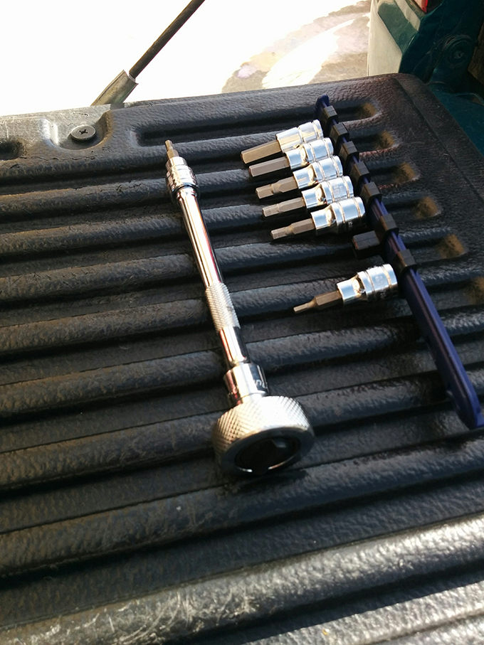
Well, that's not entirely true- these are the tools needed to take apart the bike. I needed wire strippers/crimpers/cutters for the electrical work and of course I used a torque wrench to put it back together, but the point is my tool roll will be significantly lighter going forward.
The main fuse box is located under the seat.
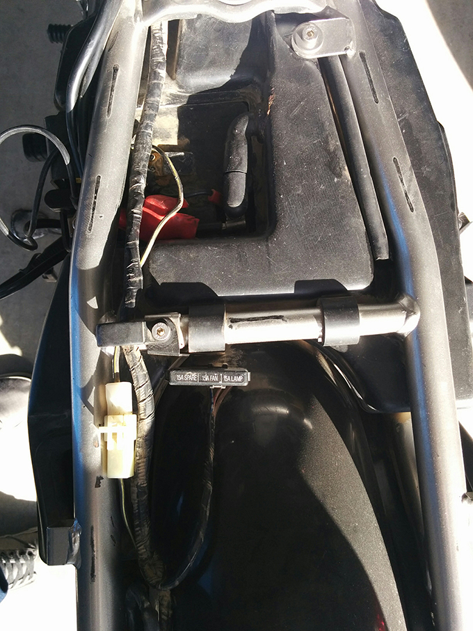
Sadly it only has two fuses, the third is a spare. There's one more in the the starter relay and another someone added with the charger, so adding the USB will make 5 fuses in 3 locations.
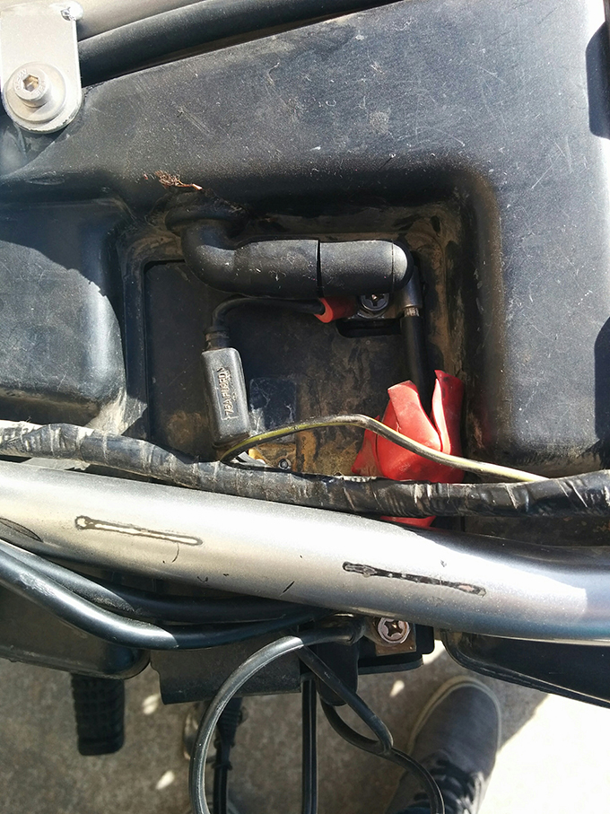
Fortunately the Clymer has a colored wiring diagram which should make this pretty straight-forward. I want to wire this in behind the ignition so it's only on when the key's on. I'm going to wire it behind the 15A fuse because, why not. The alternative is to wire it in front of the fuse, but I think that if I did that a surge might pop both fuses, whereas with the fuse behind the 15A it might save the 7A USB fuse.
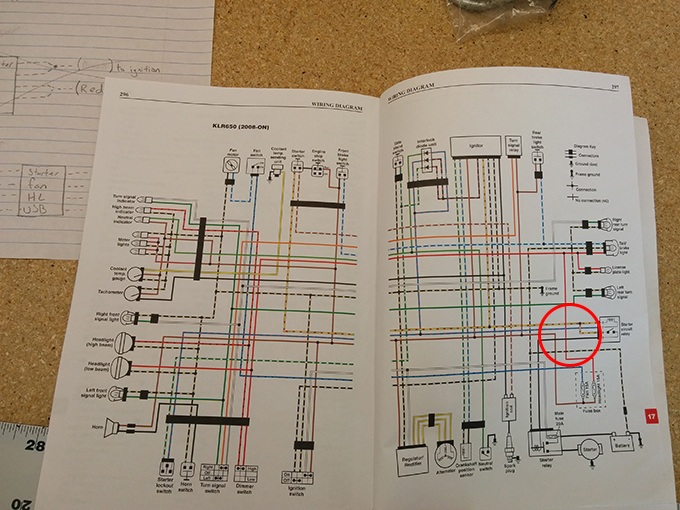
So the plan is to simply use the red power wire and the black-and-yellow for ground.
I already drew out the wiring for when I get a fuse box, and it looks pretty similar to what I'm planning now, so rewiring in the future shouldn't be too complicated.
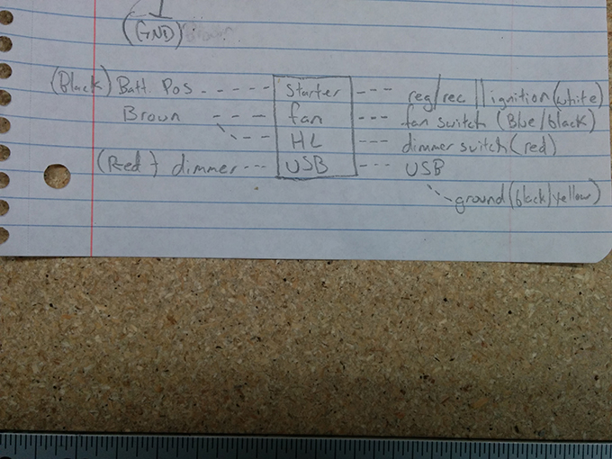
I already own a weatherproof USB port- which I really like. I've used those crappy 12v cigarette lighters w/ a USB drop-in before and I never liked them. Mostly because it feels like an unnecessary step. Why not just step-down the power directly into a USB port. This one has a nice thick housing and a thick lid with a rotating mount.
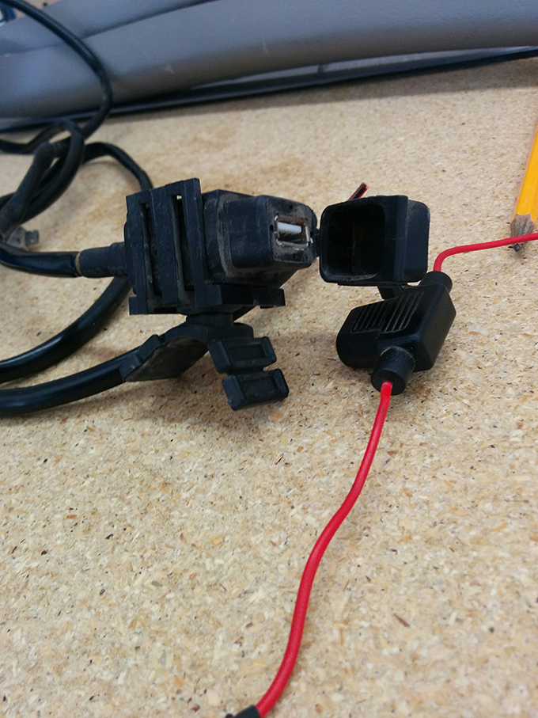
Unfortunately it's currently in pieces because some a-hole stole my battery and in the process just hack-sawed all the wiring. It's two screws you jerk! Anyways... I have to wire it all back together now.
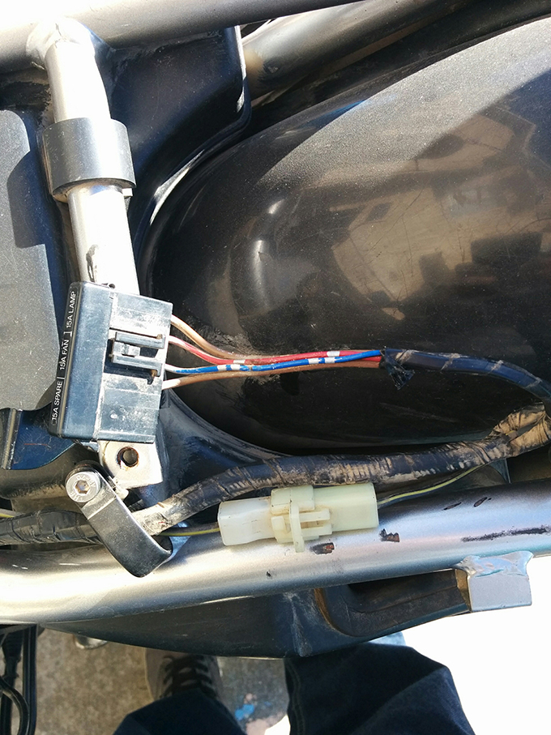
Here you can see the red power wire coming out of the fuse as mentioned earlier, and the black and yellow ground wire from the battery. Just gotta snip them and wire in the new stuff.
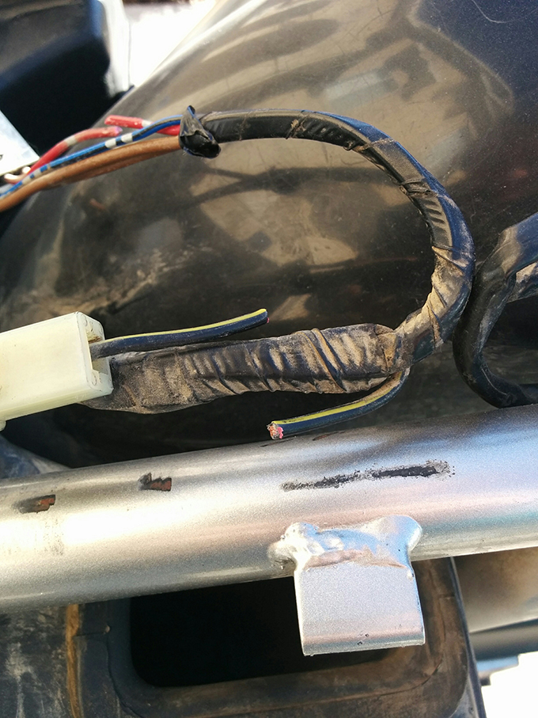
By the way, the manual says to remove the lower fairings to get the gas tank off- but you don't have to. You only have to remove the upper bolt which mounts the fairing to the gas tank.
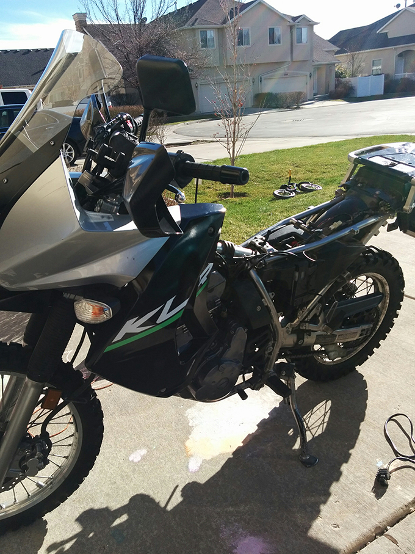
I used the factory wiring routes instead of zip-tieing everything to the frame.
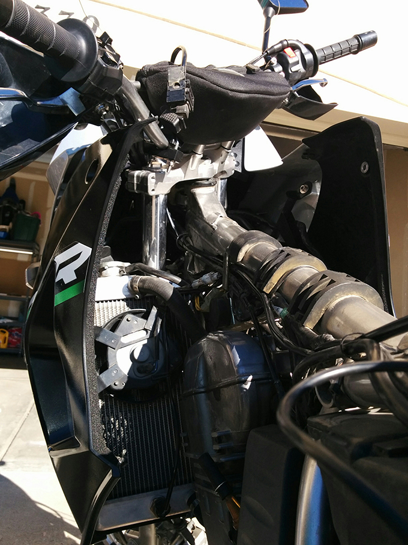
And finally attached the fuse and power/ground under the seat and taped everything back together.
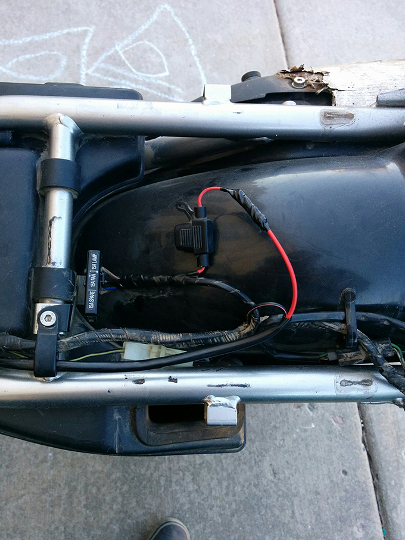
Here's the port up by the handlebars and the phone mount.
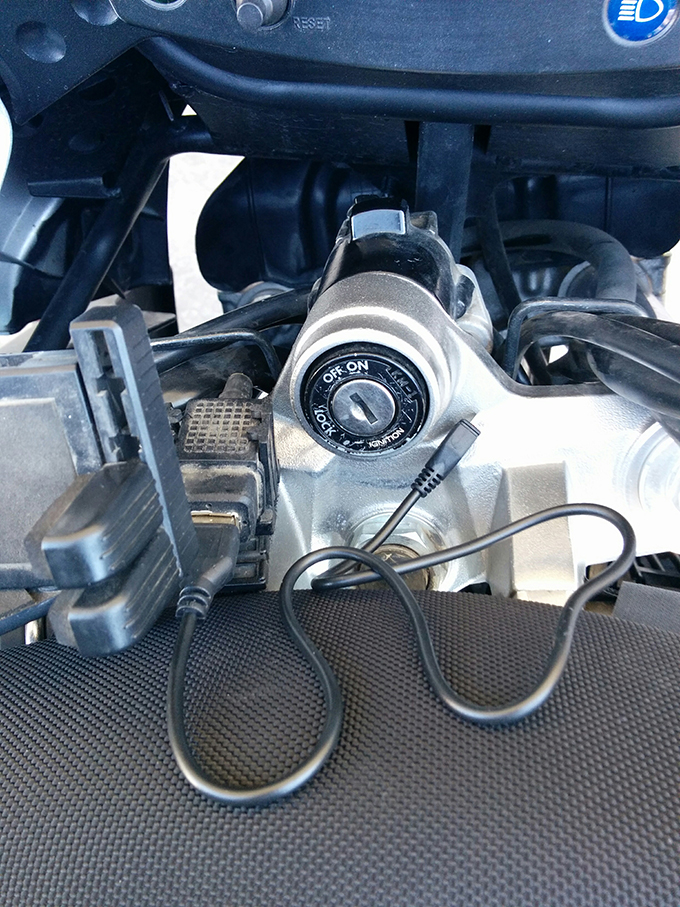
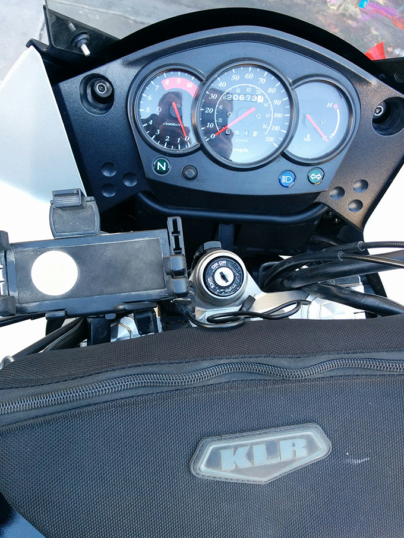
Of course the first time I turned it on, I got nothing. Panicked a little, reviewed the wiring, started to pull the bike apart again, then put another USB cable in and it worked.